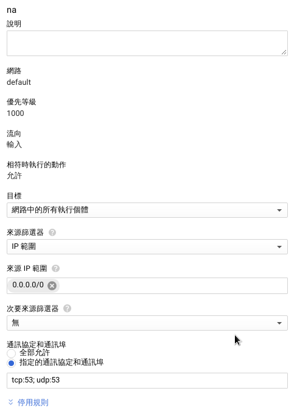

BIND
1 | sudo apt install bind9 |
記得 bind 後面還有一個 9
檔案配置
比較重要的檔案都位在 /etc/bind 這個目錄下，簡介一下幾個重要的檔案
- named.conf
- BIND 的主要設定檔，預設裝好是 include 下面3個檔案
- named.conf.local
- local config
- named.conf.options
- 一些 BIND 的設置
- named.conf.default-zones
- 紀錄一些預設的 zone，像是 .(root), localhost 正解及反解等等
- named.conf.local
- BIND 的主要設定檔，預設裝好是 include 下面3個檔案
一般不會動到 named.conf.default-zones，所以我們先 focus 在 named.conf.local 以及 named.conf.options 這兩個檔案。
預設路徑
首先打開 named.conf.options 這個檔案，會看到上面已經有預設定義好的一個路徑
1 | directory "/var/cache/bind"; |
之後我們用相對路徑的話，都會以這個路徑為基準。
最好不要改預設的位址，不然遇到權限的問題可能會需要再手動調整
Master
最重要的當然就是自己這台 server，所以我們要為他設定一下正反解的資料，以我的為例：
named.conf.local
1 | zone "kaiiiz.nctucs.net" IN { |
我們在 named.conf.local 裡 kaiiiz.nctucs.net 這個 zone 設定了讀取檔案的位址，也就是：
- /var/cache/bind/zone/db.kaiiiz.nctucs.net 這個正解檔
- /var/cache/bind/zone/db.35.229.184 這個反解檔
Master zone file
正解檔：
/var/cache/bind/zone/db.kaiiiz.nctucs.net
1 | $TTL 600 |
反解檔：
/var/cache/bind/zone/db.35.229.184
1 | $TTL 600 |
至於各個 record 的意義，可以參照鳥哥，裡面有詳細且完整的教學。
測試
1 | dig dns.kaiiiz.nctucs.net |
能正確的拿到 A record 和 NS record，代表已經正確設定成功了～
問題與解法
dig 沒反應
有可能是在 gcp 沒開 tcp/udp，在 VPC網路/防火牆規則 打開 tcp 和 udp 兩個port：

dig 很慢
可能是只有開 tcp 的緣故，udp 開起來後就解決了
小結
目前我們重要檔案的架構如下：
1 | / |